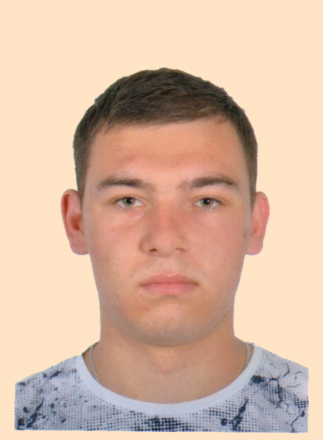

Main page heading here |
||
|

Я, Іфтода Богдан Миколайович, 10 листопада 2000 року народження, народився у селі Чорнівка. У 2007 поступив в загальноосвітню школу Чорнівський НВК. У 2016 році закінчила школу. Після закінчення школи у липні 2016 року вступив до коледжу Чернівецького національного університету імені Юрія Федьковича на спеціальність "прикладна математика". У 2020 році отримав диплом молодшого спеціаліста. У липні 2020 року вступив до Чернівецького національного університету на факультет математики та інформатики, та є студентом 3 курсу навчаючись за спеціальністю "прикладна математика" (денна форма навчання). Батько, Іфтода Микола Ілліч, 1972 року народження, проживає в с. Чорнівка. Мати, Паскал Рада Дмитрівна, 1974 року народження, проживає в с. Чорнівка. Ні я, ні мої рідні до кримінальної чи адміністративної відповідальності не притягувалися. Зараз проживаю із сім’єю за адресою: с. Чорнівка, вул. О. Кобилянської, 6. Люблю знайомитися з новими людьми, спілкуватися у великій компанії. Серед моїх друзів є і хлопці, і дівчатка. Я назвав би себе доброзичливою людиною, часто я допомагаю своїм друзям. За характером я спокійний. Люблю подумати та помріяти без зайвого клопоту. Не люблю робити щось задля "показухи”, поспішати, метушитися. Проте, якщо мене дуже роздратувати, я можу раптом вилити увесь свій гнів на кривдника, так, що йому мало не буде. Але потім я охоче замирююся, тому що не злопам'ятний. Для того, щоб зміцнити своє здоров’я, у вихідні дні з батьками відвідую басейн і тренажерний зал. Це допомагає мені менше хворіти і бути більш витривалим при виконанні фізичних вправ на уроці фізкультури. |
||